Basic OSS Architecture
The purpose of this project is to showcase the power of open source tools when designing a data and analytics system. I will be walking through my workflow step by step, and including both images, code, and notes.
Project Initialization
First Steps
Let’s start from scratch, a blank VS Code IDE. We’ll do everything from the command line, so make sure to open that up (Ctrl-`).
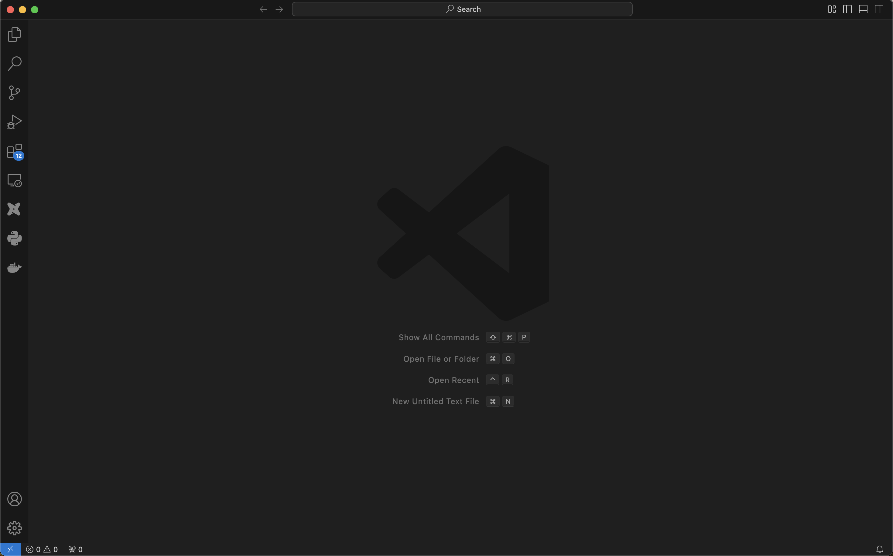
First, I begin in my home directory. Then, I change to my Documents directory, which I use for all of my projects. This is where I’ll begin creating the project directory and initializing the subsequent tools. As you’ll see below, I first initialize the uv repository and change into it. Then, I create the repo on GitHub (because I like generating the license then), pull (my global is set to merge), commit, and make the initial push. Then, I will initialize the Quarto project, to begin documentation as I work.
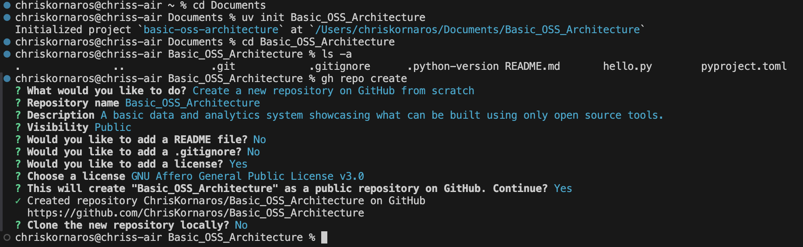
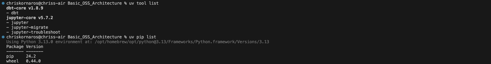 You can see here that I have both jupyter and dbt already installed. That’s because uv installs tools system wide, because these are typically used from the CLI. That being said, some CLI tools (like Quarto and DuckDB) in my experience don’t work with uv because it doesn’t install their executables.
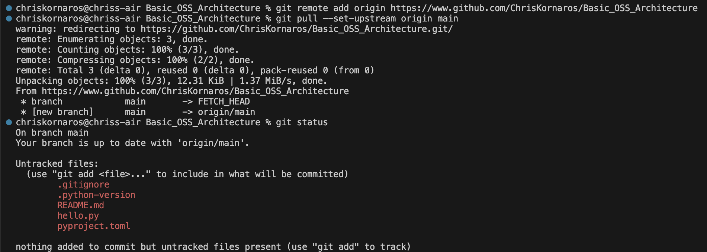
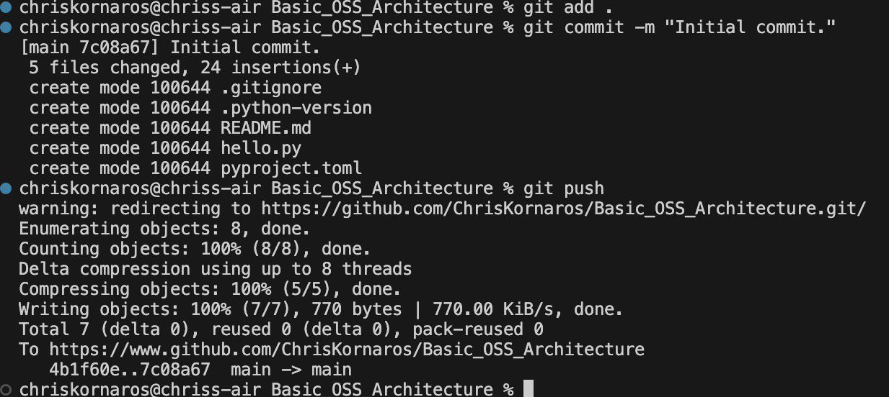
Adding Quarto
Now, it’s time to setup some extra functionality in the project. I’m going to be using Quarto for documentation, so I’ll run quarto create project. To learn more about Quarto and configuring your documentation in projects, checkout my guide. It’s a fantastic tool for building beautiful, robust documentation, even in enterprise production environments. Consider it for future papers, websites, dashboards, and reports.
That being said, if you are ever taking screenshots of your work and want to quickly move them into your images folder, you can do so from the CLI.
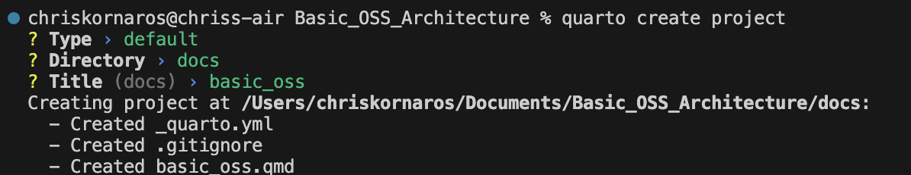
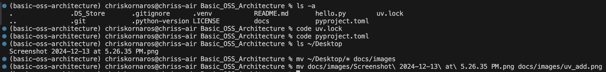
Now that you’ve done that, it’s time to start adding dependencies. As a heads up, don’t be surprised if you don’t see the uv.lock or the .venv objects in your directory right away, because uv doesn’t create those until you add dependencies. Simply run uv add to start adding them. Afterwards, the necessary requirements and lock files will update automatically. If you want to learn more, checkout my uv guide.
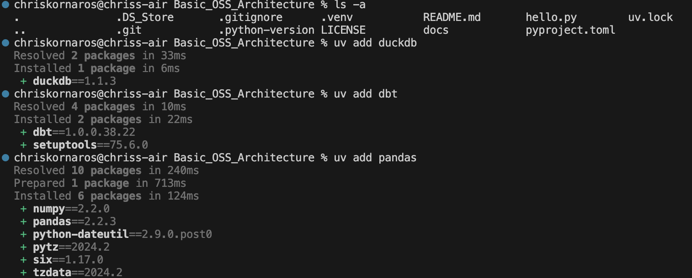
The Pyproject.toml file
Once that’s done, uv will update the general dependencies in the pyproject.toml file and the specific versions in uv.lock (think requirements.txt on steroids). The nice thing here, it only lists the actual package you needed, not everything else that the package requires. So, when you want to remove packages you can simply use uv remove and the individual package names listed here to remove everything in your environment. There’s an example below.
[project]
name = "basic-oss-architecture"
version = "0.1.0"
description = "Add your description here"
readme = "README.md"
requires-python = ">=3.13"
dependencies = [
"dbt-duckdb>=1.9.1",
"dbt>=1.0.0.38.22",
"duckdb>=1.1.3",
"great-expectations>=0.18.22",
"jupyter>=1.1.1",
"pandas>=2.2.3",
"pytest>=8.3.4",
"quarto>=0.1.0",
]Using .gitignore effectively
You probably noticed, but when you initialize a project with uv it automatically creates a .gitignore file and populates it with basic files and directories which don’t need to be checked into source control (like .venv). I take this a step further, and add some Quarto specific files and directories too, .quarto and _files folders. Managing this file effectively can drastically reduce the file size of your commits.
Below is an example of my file at this early project stage.
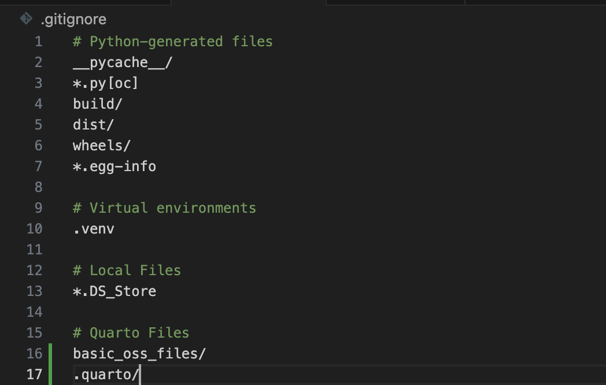
Initializing a Data Environment
Now, you’ll be setting up dbt. Similar to the other CLI tools, dbt uses the dbt init command to create the folder structure necessary for the program to be effective. As you can see below, the process is very easy. You’ll only enter a name for your project, which will (case sensitively) become the name of the dbt directory. Next, we’ll walk through the fundamental pieces of a dbt project in depth.
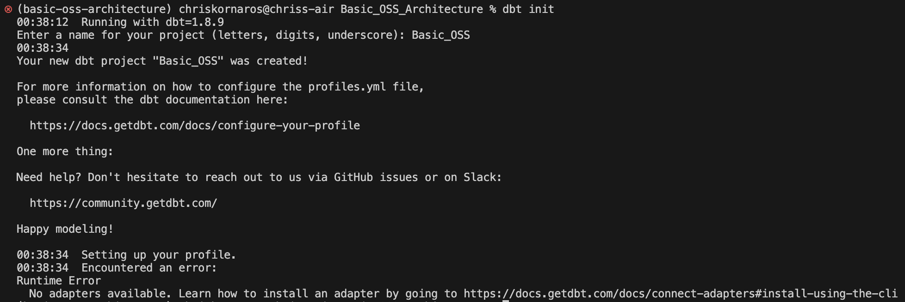
The Data Build Tool (dbt)
As I said, creating a dbt project is easy, but it can get confusing from here on out if you’re alone with the dbt documentation. In my experience, dbt initalizes a logs/ folder in the project root directory not the dbt root directory. So, I make sure to add that to the gitignore file, because I don’t think that needs to be checked into version control.
So, now that you’ve initialized your folder, let’s go through the basics:
Project Root: Basic_OSS
In the case of my project, the root folder is called Basic_OSS. Here, you’ll find the 6 subdirectories, a .gitignore file, a README.md file, and the dbt_project.yml file. The .gitignore can be deleted, because you have one in the project root directory, and for the same reason, so can the README. The dbt project file is the core of your entire data environment, in the same exact way that a _quarto.yml file is the core of your website, book, or documentation project.
This is where you’ll configure the actual structure and hierarchy of your environment, along with things like schemas or variables, or aliases.
Analyses
Contains the SQL files for any analysis done that are not part of the core models. Think of these as the SELECT statements for analytical queries, whereas models handle the DDL statements for database architects. Depending on your workflow, this folder could be unused.
Macros
This is where you can store custom macros (functions) and reusable code written in either SQL or jinja. This is the Python package equivalent for SQL and it’s often used to ensure DRY (Don’t Repeat Yourself) principles for ETL and other database work.
Models
This is the core of dbt. Models are the SQL tables themselves, as well as the transformations when cleaning and aggregating data (from raw to reporting). If you have a raw schema (where the raw data is temporarily stored) and a clean schema (where cleaned data is persisted), you would have both a raw and clean folder within the models folder. Then, the individual queries would live within those subfolders as the actual tables and views.
It is where most of (if not all) your transformations live. So, can become computationally taxing if you aren’t careful.
Run with dbt run or dbt run --select {model_directory_name}.
Seeds
These are flat files containing static data used for mapping (or reference) data. Only use this if your project needs static data. For more on seeds.
Run with dbt seed.
Snapshots
Stores snapshot definitions for versioning and tracking changes in source data over time. These are commonly used for SCDs (slowly changing dimensions) or auditing.
Run with dbt snapshot.
Tests
Fairly self explanatory, but this folder contains custom, SQL-defined tests for your models. Dbt allows for both custom tests defined in .sql files and generic tests defined in a YAML. The tests run on various models are defined in the dbt_project.yml file.
Extra Notes
Dbt also has the docs/ and dbt_packages/ folders which are for advanced documentation and shareable, modularized code, respectively. Generally speaking, your workflow will really only involve the following parts of a dbt project:
models/tests/macros/dbt_project.yml
The others are optional and provide functionality, that while useful and powerful in many cases, is not always needed. Now that we’ve got the local directory all configured, it’s time to start building the container for our PostgreSQL instance (server, cluster, whatever you want to call it).
Docker and Containers
Docker is a powerful open-source platform that simplifies the process of developing, packaging, and deploying applications using containers, which are lightweight, portable environments. Unlike traditional virtualization, which replicates an entire computer system, containers virtualize at the operating system (OS) level, creating isolated spaces where applications run with all their dependencies. By isolating apps in containers, Docker ensures that each environment is consistent across different systems, reducing conflicts caused by mismatched dependencies. This approach accelerates development, enhances portability, and enables scalability, making Docker a cornerstone of modern microservices architectures and containerized workflows.
You can learn more about Docker either through their open source documentation or DataCamp’s course by Tim Sangster!
The Dockerfile and Configuring Your Image
The Dockerfile is the foundation of Docker image creation, serving as a script of instructions to define the environment and behavior of your containerized application. Each instruction in the Dockerfile builds on the previous one, forming layers that together create a Docker image.
A Dockerfile is composed of various instructions, such as:
FROM: Specifies the base image to start with. Always begin with this instruction.
FROM postgresRUN: Executes shell commands during the build process and creates a new layer.
RUN apt-get updateCOPY/ADD: Transfers files from your local system into the image.
COPY postgres-password.txt /usr/home/WORKDIR: Sets the working directory for subsequent instructions.
WORKDIR /usr/home/CMD: Specifies the default command to run when the container starts. Unlike
RUN,CMDis executed at runtime.CMD ["postgres"]
Optimizing Builds with Caching
Docker employs a layer-caching mechanism to optimize builds. Each instruction in the Dockerfile forms a layer, and Docker reuses unchanged layers in subsequent builds to save time. For example:
RUN apt-get update
RUN apt-get install -y libpq-devIf you rebuild and these instructions remain unchanged, Docker uses cached results. However, if the base image or any instruction changes, the cache is invalidated for that layer and subsequent ones.
Reorder Dockerfile instructions to maximize cache efficiency. Place less frequently changing instructions higher in the file. Then, place the layers you need to test changes in more frequently, lower in the file.
Using Variables in Dockerfiles
Variables make Dockerfiles more flexible and maintainable.
ARG: Sets build-time variables.
ARG APP_PORT=5000 RUN echo "Application port: $APP_PORT"ARGvalues are accessible only during the build process.ENV: Sets environment variables for runtime.
ENV APP_ENV=productionThese variables persist after the image is built and can be overridden when running the container using the
--envflag.
Avoid storing sensitive data like credentials in ARG or ENV, as they are visible in the image’s history.
Security Best Practices
Use Official Images: Base your
Dockerfileon trusted, well-maintained images from sources like Docker Hub.Minimize Packages: Install only what your application needs to reduce potential vulnerabilities.
Avoid Root Users: Run applications with restricted permissions by creating a non-root user:
RUN useradd -m appuser USER appuserUpdate Regularly: Keep your base images and software dependencies up to date.
Write a PostgreSQL Dockerfile and Build the Image
Below is an example Dockerfile for setting up PostgreSQL, with specified user, password, and database name:
# Use an official PostgreSQL base image
FROM postgres
# Set environment variables from a local file
COPY .pg-password /etc/postgresql/.pg-password
# Read the password from the file and set it as an environment variable
RUN POSTGRES_PASSWORD=$(cat /etc/postgresql/.pg-password)
# Set additional environment variables
ENV POSTGRES_USER=chris
ENV POSTGRES_DB=test
# Expose the PostgreSQL port
EXPOSE 5432
# Run commands to configure the environment
RUN apt-get update && apt-get install -y \
libpq-dev \
&& rm -rf /var/lib/apt/lists/*
# Start PostgreSQL service when the container runs
CMD ["postgres"]For the purposes of simplicity in this guide, I’m just going to leave the POSTGRES_ variables as they are in the file. The password I’ll keep separate to demonstrate how that would work. That being said, after you’ve writen the image’s Dockerfile, you’ll build the image.
docker build -t test .If you need to remove the image at any point, first make sure there are no containers using it, then run the following:
docker rmi test
Running the Container
Next, to run the container, you’ll be adding a few flags, which I’ll explain below. For simplicity sake, it’s probably easiest to store this in a script somewhere and then execute that on start up. **Note** to myself: Add a section on writing local scripts/executables like this later on in the guide.
docker run \
--name pg_test \
-e POSTGRES_PASSWORD_FILE=/etc/postgresql/.pg-password \
-e POSTGRES_USER=chris \
-e POSTGRES_DB=test \
-p 5432:5432 \
test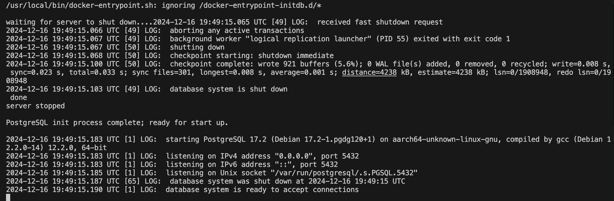
Flags Explained
The code above will run a container using the Docker image test as the base.
- The container will have the
--namepg_test - You’ll use the file located at
/etc/postgresql/.pg-passwordto define thePOSTGRES_PASSWORD_FILEenvironment variable- In Docker, when you use the -e option to pass environment variables, you typically use POSTGRES_PASSWORD_FILE instead of POSTGRES_PASSWORD for file-based password configuration because of how Docker processes environment variables and how the underlying system uses them.
- You’ll also pass the
-environment variables forPOSTGRES_USERandPOSTGRES_DB- This isn’t necessary because they are defined in the Dockerfile, so they are globally available within the container.
- It’s useful to specify these values in the
runcommand if you want to override the default values or pass different values. - Specifying the user and database in the docker run command allows you to control the environment at runtime. More useful in production envrionments, less so for one-off projects like this
- Finally, you’ll map the container’s
-port 5432 to yourport:5432
Verifying a Successful Run
To verify your container is running, you can use docker ps to get a list of active containers, their image, and other bits of information.
docker ps
CONTAINER ID IMAGE COMMAND CREATED STATUS PORTS NAMES
5793b64919f0 test "docker-entrypoint.s…" 14 seconds ago Up 13 seconds 0.0.0.0:5432->5432/tcp pg_testIf you need to stop the running container, simply type:
docker kill pg_testConnecting to the PostgreSQL Server from your Command-Line Interface
Now that the server is up and running, you can test an active connection (and your user permissions) from your CLI. To do so, run the following:
psql -h localhost -U chris -d testpsqlis the CLI command for postgres, in the same wayghis for GitHub-htells postgres that the server’s host is localhost-Utells postgres to use the user chris-dtells postgres to connect to the database test
You can close that connection at any time by typing \q.
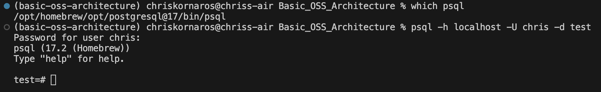
I’m working on a MacOS laptop and manage local packages (like Python, Docker, gh, and Postgres) with Homebrew. Even though I had PostgreSQLv17 installed, it wasn’t added to my PATH for some reason. So, when I ran psql ... I got an error. To fix this, I simply edited the ~/.zshrc (the MacOS default terminal zsh configuration file in my home directory) and added export PATH="/opt/homebrew/opt/postgresql@17/bin:$PATH".
Exploring the Environment
Now that you’re all setup and connected, it’s time to explore the environment and verify your privileges. In this section I’ll run through some basic commands that you can use to understand whatever postgres environment you’re in.
First, the \du command will tell you which roles are available and their attributes:
test=# \du
List of roles
Role name | Attributes
-----------+------------------------------------------------------------
chris | Superuser, Create role, Create DB, Replication, Bypass RLSSecond, the \l command lists all databases:
test=# \l
List of databases
Name | Owner | Encoding | Locale Provider | Collate | Ctype | Locale | ICU Rules | Access privileges
-----------+-------+----------+-----------------+------------+------------+--------+-----------+-------------------
postgres | chris | UTF8 | libc | en_US.utf8 | en_US.utf8 | | |
template0 | chris | UTF8 | libc | en_US.utf8 | en_US.utf8 | | | =c/chris +
| | | | | | | | chris=CTc/chris
template1 | chris | UTF8 | libc | en_US.utf8 | en_US.utf8 | | | =c/chris +
| | | | | | | | chris=CTc/chris
test | chris | UTF8 | libc | en_US.utf8 | en_US.utf8 | | |
(4 rows)Third, the \dn command lists all schemas:
test=# \dn
List of schemas
Name | Owner
--------+-------------------
public | pg_database_owner
(1 row)Fourth, the \dt command lists all tables. You should expect this output upon creation of a new database:
test=# \dt
Did not find any relations.Here are some other useful commands that will not be useful with a fresh database:
\dvlists all views\d table_namelists all columns in a table with name table_name\di table_namelists all indexes for a table with name table_name
Finally, to really dive into a specific database, you’ll use the \c command, but in our case we connected when we first ran the psql command. If you just type psql without the -d flag, you’ll simply connect to a server in general, not a specific database.
At this point, the initial project configuration is just about done. The next steps involve initializing the persistent DuckDB database to use as the Dev/Test environment and defining the raw data model with dbt. For now, you can close the connection to the Postgres server and shutdown container.
The basic data model and ingestion will all be handled in DuckDB and Python.
DuckDB
DuckDB is:
Simple: Easy to install and deploy, has zero external dependencies, and runs in-process in its host app or as a single binary. Portable: Runs on Linux, macOS, Windows, and all popular hardware architectures, has client APIs for major programming languages Feature-rich: Offers a rich SQL dialect. Can read/write files (CSV, Parquet, and JSON), to and from the local file system, and remote endpoints such as S3 buckets. Fast: Runs analytical queries at blazing speed due to its columnar engine, which supports parallel execution and can process larger-than-memory workloads. Extensible: DuckDB is extensible by third-party features such as new data types, functions, file formats and new SQL syntax. Free: DuckDB and its core extensions are open-source under the permissive MIT License.
TL;DR DuckDB is awesome.
As the block of text tells you, while DuckDB is both simple and portable, it is also feature-rich, which is why it’s great for a development or test environment. It’s even easy to spin-up an instance of DuckDB in-memory, while you’re testing or exploring data, and then you can choose to remove that or persist the file in storage.
DuckDB can operate in both persistent mode, where the data is saved to disk, and in in-memory mode, where the entire data set is stored in the main memory. To create or open a persistent database, set the path of the database file, e.g., database.duckdb, when creating the connection. This path can point to an existing database or to a file that does not yet exist and DuckDB will open or create a database at that location as needed. The file may have an arbitrary extension, but .db or .duckdb are two common choices with .ddb also used sometimes. Starting with v0.10, DuckDB’s storage format is backwards-compatible, i.e., DuckDB is able to read database files produced by an older versions of DuckDB. DuckDB can operate in in-memory mode. In most clients, this can be activated by passing the special value :memory: as the database file or omitting the database file argument. In in-memory mode, no data is persisted to disk, therefore, all data is lost when the process finishes.
For more information, here are links to some important pieces of DuckDB:
As you’ll see, I’m planning to use DuckDB with Python to ingest raw data from an API (or flat files) and then build the dbt models based off that (with some help from built-in DuckDB functionality). After that, I’ll connect dbt to Postgres and copy the data model over.
A Persistent Database with DuckDB
As you saw above, it’s very easy to get started with DuckDB. To keep with the structure of the project, I’m going to put the .duckdb file in the root project directory because the Dockerfile (which serves as the Postgres file) is there as well.
Basic_OSS_Architecture % duckdb test.duckdb
v1.1.3 19864453f7
Enter ".help" for usage hints.
D SELECT * FROM duckdb_tables();
.exit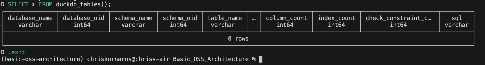